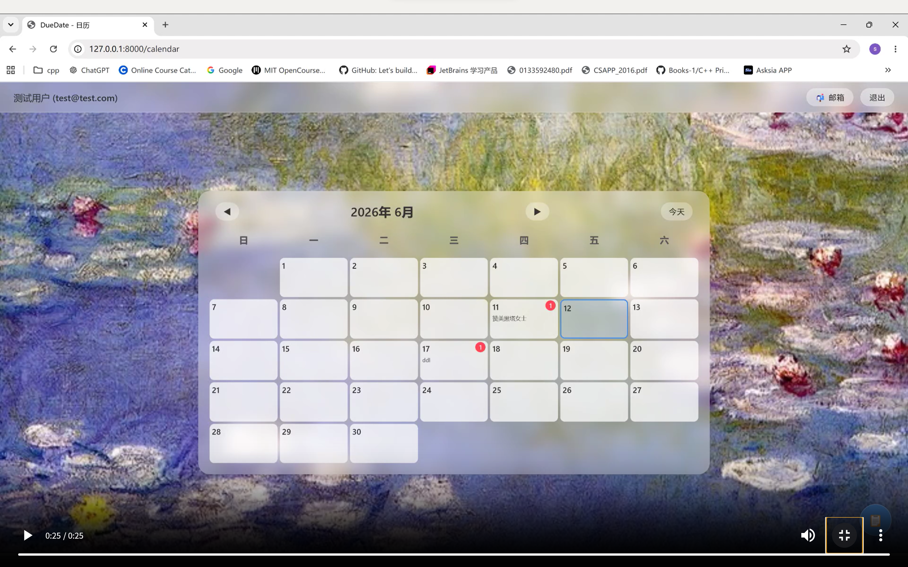

前言
拾光签到任务工厂的对比和思考
简要对比一下俩版设计

很明显可以看到相同的部分：杂物→待办
以及不同的部分：日程/任务
①筛选任务②执行，是这两代设计共同的诉求
在《美丽的瓦西里萨》中，女巫巴巴雅嘠要求瓦西里萨将发霉了的玉米和好的种子分开，第二天又要求他将罂粟花种子分类并且将灰尘清理干净，冯法兰兹对此解读道：“把好的和坏的谷物分开是一种需要耐心的工作，既不能匆忙地做也不能加速。”
在我的本科生活中，接触到的信息非常繁杂，有些通知是重要的，有些又无关紧要，可以选择的道路和技能错综复杂，究竟如何从繁杂的信息中筛选出对我来说重要的事并执行，这个问题一直困扰着我，所以在《拾光签》的设计中，我采用了杂物→待办的设计，在《任务工厂》中更近一步，采用了与tinder类似的“Swipe-to-like operation”机制，因为要丢进垃圾堆，所以改为上下滑动，在分拣中，下滑表示丢弃，上滑则加入待办，通过明确的分拣动作来筛选出要做的事。
在《拾光签》的设计中，我误以为生活的混乱是源于缺乏清晰的时间规划，从而将落点放在了日程规划上，以日历看板为核心进行设计，在后续体验中我意识到，正是由于精确的日程往往难以实行，才一而再再而三的引发我的焦虑，比起聚焦于时间，聚焦于任务，将任务拆解为步骤再安排执行，或许是更灵活的选择，所以在《任务工厂》中，我以任务为核心，做了步骤拆解、进度展示和完成归档的设计。
拾光签
一个待办日历匣的诞生
设计
讲拾光签的话呢，就要简单讲一下他的前身：duedate（ddl提醒日历），在小组作业中，和组员共同选择了*通知提醒助手*作为课设项目，结合经验考虑到ddl是不少学生对于通知最关心的部分，且日历的形式简单易展示，且收集来的通知需要一个展示看板，于是设计了日历看板的形式

duedate实机截图
在课设完成之后，我依旧很喜欢这个设计，正好我朋友经常会在微信上开视频一起学习，我想能不能做成一个好友预约系统，可以在日历上交互好友的空闲时间进行预约呢，后续我意识到这样不利于好友之间的隐私保护，便考虑在学习小组的公屏上发起预约，但是这样就和微信群一样了，考虑在小组中加入宠物培养，可以按多人学习时长挣猫粮之类的，但是我的美术不支持，所以都砍掉了，转换思路把拾光签改成单人使用的提醒工具。
设计了周历和月历的切换，周历类似于课表，方便查看每天的日程，月历方便展示当月的日程数量，点击后才可以查看每日日程（周历参考课表设计也留下了bug，后续测试过程中发现六点前的事件不会现实在周历中，检查显示代码无误，最终发现由于是参考课表设计，从一开始便没有显示六点前的内容，于是便把周历的时间改成第0天零点到第1天零点。
出于减熵的心态，设计了待办和杂物堆双层缓冲，从通知到待办到实际加入日程做多层筛选，避免一开屏就被通知淹没，希望可以通过缓冲隔离设计保证用户对日程的掌控感。
有些待办是长期事项，加入一次日程后，后续还可能需要，所以便设置了长期待办，锁定后不会在加入日程后自动删除，而是保留在待办中。
由于我本人经常面对多任务并行，截至日期和优先级差不多，在空闲时间难以抉择的问题，便在待办中设置了签筒，可以通过抽签减少决策时间
流程图和原型
页面流程图（draw.io)
简要原型(Axure)
实机截图
实机演示
Task Factory
trouble && solution
受到了这个视频的启发，纠正了拾光签设计的误区，在拾光签的设计中，我尝试直接通过一个产品解决问题，实际上需要同时设计解决方案和产品，这个视频让我意识到我可以直接参考已有的方案，并以此设计优化产品
笔记：
加工流程：
粗糙页面图：
html原型
联系方式
电话：13720867131
邮箱：lishuqi_05@163.com
微信：Null_3_Zn_and_H